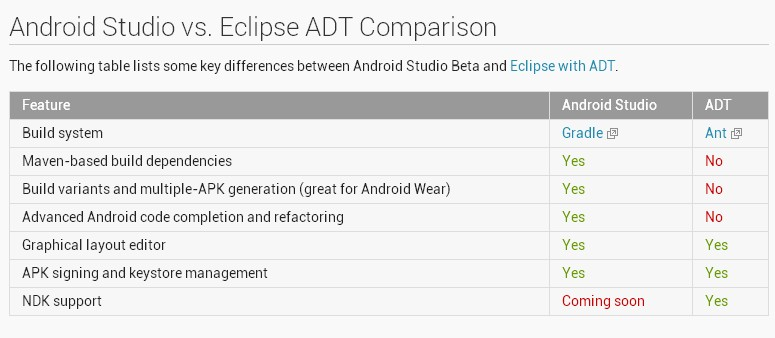
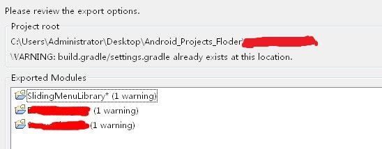
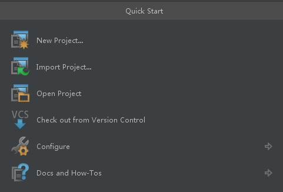
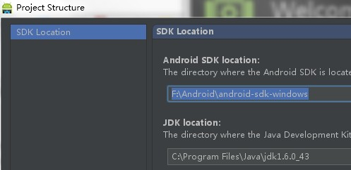
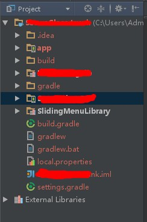

关于Android Studio
在2013 Google IO大会上发布的全新IDE Android Studio相信各位猿们并不陌生，截止2014的Google IO大会，虽然依然木有发布正式版，但是根据我这几周的使用情况来说，BUG已经很少了，完全不影响正常使用。而且Android Studio是基于IntelliJ的，无论从运行速度上还是编程的快捷性上，都比Eclipse的体验要好，开发效率妥妥的提高了。
Android Studio vs Eclipse ADT

目前Android Studio最大的缺点是还不支持NDK工具，如果项目里面有使用NDK的，估计要等正式版后才能用了。（或者通过第三方的编译环境，如Cygwin等，来编译本地代码）
关于版本
截至2014/08/13，目前最新版是Canary Channel的0.8.6
（补充说明一下这里的版本：总共分为4个Channel，分别是：Canary，Dev，Beta，Stable。其更新频率逐渐递减，Canary大概1或者2周会更新一次，Beta则为相对稳定的发布版，而Stable则是传说中的正式版，目前还木有。）
网址：
- http://tools.android.com/download/studio （墙裂推荐从此下载最新版，理由一：绿色版，理由二：能及时获取最新版（推荐用Canary 版））
- http://developer.android.com/sdk/installing/studio.html （当然你也可以从官网下载，是一个安装文件，与上面不同的是他包含了一个Android L Preview的SDK，其实我们大可以用自己本机的SDK）
- https://github.com/inferjay/AndroidDevTools/ （不会翻墙的猿们可以从这里下载，里面包含很多开发工具资源，更新速度比官方稍慢）
开始配置环境
废话不多说了，其实很容易的，以下几步需要注意的：
从Eclipse导出build.gradle文件：Export->Android->Generate Gradle build files，选中需要导出的项目。（注意：如果有依赖Library库项目的，会自动帮你识别并选上，一起导出就行了。如果有warning，表明该目录之前存在build.gradle文件，勾上Force overriding of existing file即可覆盖）
解压绿色版的.zip文件运行bin目录下的studio.exe（32位）或studio64.exe（64位），首先设置SDK和JDK路径，在Quick Start界面Configure->Project Defaults->Project Structure

然后回到Quick Start界面选择Import Project选择步骤1中的build.gradle文件导入。第一次导入的时候会下载Gradle文件，大概50M，时间比较长，要耐心等待哦，顺利的话就成功的从Eclipse导入到Android Studio了。
关于目录结构，若从Eclipse中生成build.gradle文件导入的，则会保留之前目录结构；若直接在Android Studio中New Project生成的，则目录结构会比较奇怪，是Studio的标准目录结构（注意：Android Studio中的Project相当于Eclipse中的Workspace， Module则相当于Eclipse中的Project，下图是一个Project，包括了几个Module）
其他：如果导入后编译不成功，根据Console的提示很容易就能找到原因的，当初遇到了几个不是很记得了，主要是修改build.gradle或settings.gradle文件里面的内容。如果各位有编译出错问题不知如何解决的，欢迎留言。。。
猿们！还在犹豫啥？赶紧用起来吧。Android Studio是趋势，正式版出了后很快会普及的。现在体验一把也无妨嘛，哈哈！！！